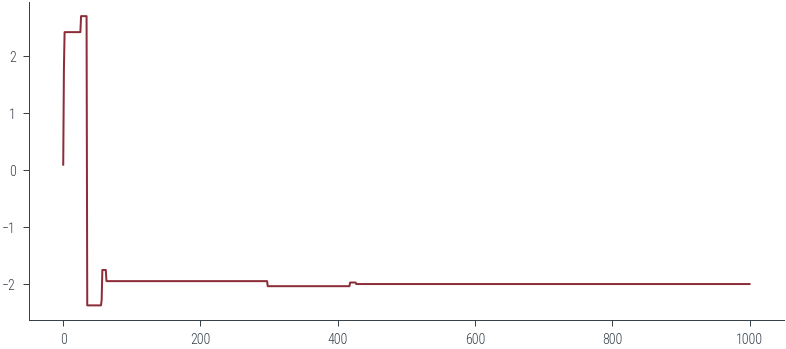
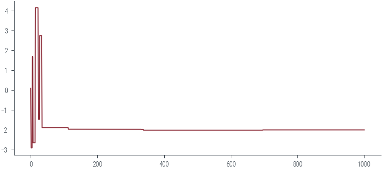
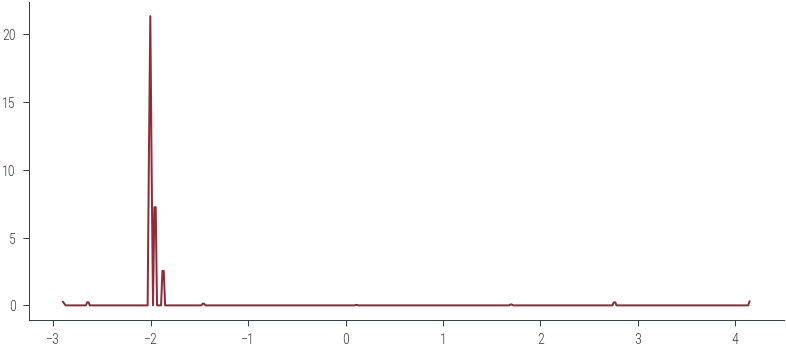
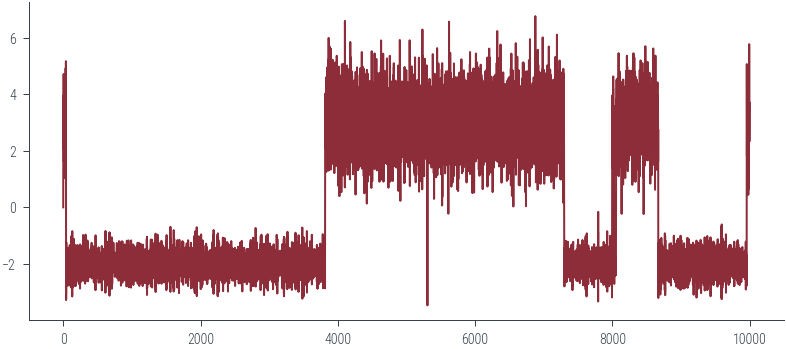
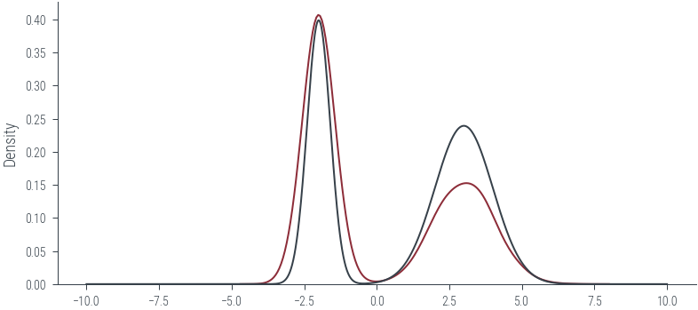
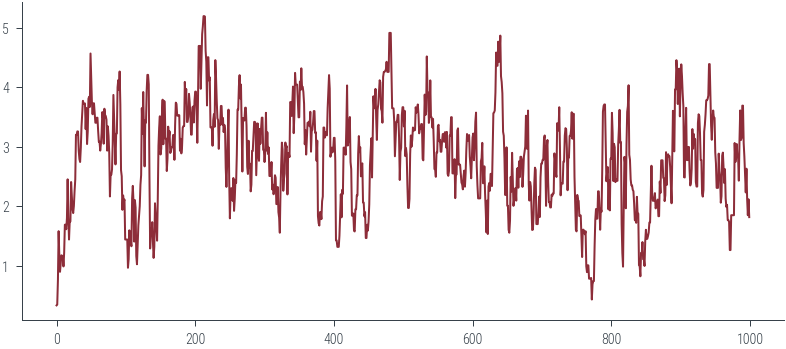

import torch
import numpy as np
import matplotlib.pyplot as plt
import pandas as pd
import matplotlib.pyplot as plt
import seaborn as sns
%matplotlib inline
# Retina display
%config InlineBackend.figure_format = 'retina'
import warnings
warnings.filterwarnings('ignore')
import arviz as az
hamiltorch.set_random_seed(123)
device = torch.device('cuda:0' if torch.cuda.is_available() else 'cpu')from tueplots import bundles
plt.rcParams.update(bundles.beamer_moml())
# Also add despine to the bundle using rcParams
plt.rcParams['axes.spines.right'] = False
plt.rcParams['axes.spines.top'] = False
# Increase font size to match Beamer template
plt.rcParams['font.size'] = 16
# Make background transparent
plt.rcParams['figure.facecolor'] = 'none'# mixture of gaussians
m = torch.distributions.MixtureSameFamily(
torch.distributions.Categorical(torch.tensor([0.4, 0.6])),
torch.distributions.Normal(torch.tensor([-2., 3.]), torch.tensor([0.4, 1.])))# plot the distribution
x = torch.linspace(-10, 10, 1000)
plt.plot(x, torch.exp(m.log_prob(x)))
def get_samples(m, x0, seed=42):
torch.manual_seed(seed)
samples = [x0.item()]
for i in range(1000):
xi = torch.distributions.Normal(torch.tensor(samples[-1]), 5).sample()
# Check if log-density is higher at new sample
if m.log_prob(xi) > m.log_prob(torch.tensor(samples[-1])):
samples.append(xi.item())
else:
samples.append(samples[-1])
return samples
x0 = torch.tensor([0.1]) # Initial value
samples = get_samples(m, x0, 42)
plt.plot(samples)
samples = get_samples(m, x0, 10)
plt.plot(samples)
def get_samples_jump(m, x0, seed=42):
torch.manual_seed(seed)
samples = [x0.item()]
for i in range(10000):
xi = torch.distributions.Normal(torch.tensor(samples[-1]), 1).sample()
# Find acceptance probability
a = m.log_prob(xi) - m.log_prob(torch.tensor(samples[-1]))
a = torch.exp(a)
# Check if log-density is higher at new sample
if a > 1:
samples.append(xi.item())
else:
u = torch.rand(1)
if u < a:
samples.append(xi.item())
else:
samples.append(samples[-1])
return samples
get_samples_jump(m, x0, 42)
plt.plot(samples)
get_samples_jump(m, x0, 2)
plt.plot(samples)get_samples_jump(m, x0, 10)
plt.plot(samples)
az.plot_kde(np.array(samples))<AxesSubplot:>
# use Hamiltorch
import hamiltorch
def log_prob(x):
return m.log_prob(x)
N = 10000
step_size = .3
L = 5
hamiltorch.set_random_seed(123)
params_init = torch.zeros(1)
params_hmc = hamiltorch.sample(log_prob_func=log_prob, params_init=params_init, num_samples=N,
step_size=step_size, num_steps_per_sample=L)Sampling (Sampler.HMC; Integrator.IMPLICIT)
Time spent | Time remain.| Progress | Samples | Samples/sec
0d:00:00:19 | 0d:00:00:00 | #################### | 10000/10000 | 501.14
Acceptance Rate 0.98plt.plot(torch.stack(params_hmc).numpy())
sns.kdeplot(torch.stack(params_hmc).numpy().flatten())
plt.plot(x, torch.exp(m.log_prob(x)))
import torch
import torch.distributions as dist
def random_walk_metropolis_hastings(target_dist, num_samples, initial_sample, proposal_std):
samples = [initial_sample]
current_sample = initial_sample
for _ in range(num_samples):
# Propose a new sample from a normal distribution (random walk)
proposal = torch.normal(current_sample, proposal_std)
# Calculate the acceptance ratio
log_acceptance_ratio = target_dist.log_prob(proposal) - target_dist.log_prob(current_sample)
# Accept or reject the proposal
if torch.log(torch.rand(1)) < log_acceptance_ratio:
current_sample = proposal
samples.append(current_sample)
return torch.stack(samples[1:])
# Example usage:
# Define your target distribution (e.g., a normal distribution)
#target_distribution = dist.Normal(3.0, 1.0)
target_distribution = m
# Number of samples to generate
num_samples = 1000
# Initial sample
initial_sample = torch.tensor(0.0)
# Standard deviation of the proposal distribution (controls the step size)
proposal_std = 0.5
# Generate samples using RWMH
samples = random_walk_metropolis_hastings(target_distribution, num_samples, initial_sample, proposal_std)
# Now 'samples' contains samples from the target distributionplt.plot(samples)